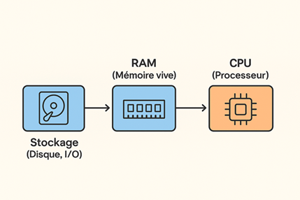
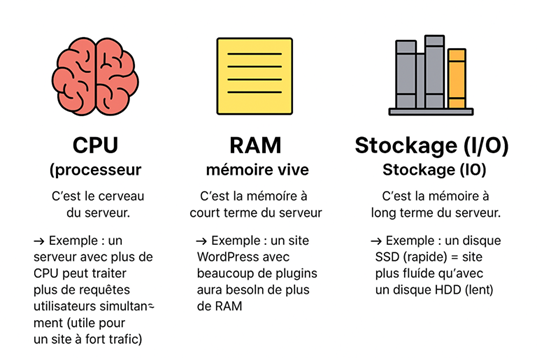

Chapitre I : CPU, RAM et stockage
Les différentes ressources :
⚙️ 1. CPU (processeur)
- C’est le cerveau du serveur
- Il exécute les calculs et instructions
- Plus il a de cœurs et de fréquence (GHz), plus il peut exécuter les calculs, les instructions rapidement
🧠 2. RAM (mémoire vive)
- C’est la mémoire à court terme du serveur
- Stocke temporairement les données utilisées par le CPU
- Plus il y a de RAM, plus le serveur peut exécuter des applications / des tâches / des fichiers en parallèle
sans ralentir
💾 3. Stockage (I/O)
- C’est la mémoire à long terme du serveur
- Les données y sont conservées même après redémarrage
- Les I/O (Input/Output) mesurent la vitesse d’accès au disque (lecture/écriture)
👉 Exemple : un disque SSD (rapide) = site plus fluide qu’avec un disque HDD (lent)
🔎 Schéma comparatif (simple et imagé)
- CPU = cerveau 🧠 → calcule
- RAM = mémoire vive 📝 → pense rapidement mais oublie si on éteint
- Stockage (I/O) = bibliothèque 📚 → garde tout, mais plus lent à accéder que la RAM
📡 Analogie avec une cuisine
- Le CPU est le cuisinier qui prépare les plats
- La RAM est le plan de travail : plus il est grand, plus le cuisinier peut travailler vite et servir
plusieurs clients en même temps
🧩 Explication étape par étape
- Stockage (I/O) : la donnée « dort » sur le disque dur ou SSD
- RAM :
- La RAM est beaucoup plus rapide que le disque, donc ça accélère le traitement
- Mais elle est volatile : si le serveur s’éteint, ça disparaît
- CPU : le processeur utilise la donnée en RAM pour effectuer des calculs

⚠️ Parfois, le CPU peut aussi réécrire vers la RAM ou le stockage après calcul

Lien
complémentaire sur les ressources d'hébergement web
Retour au sommaire